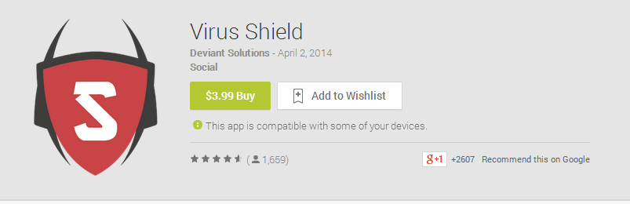
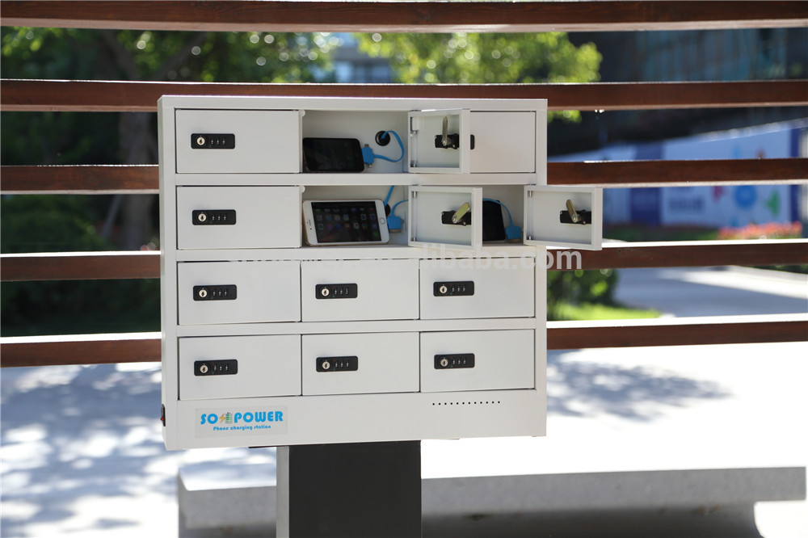
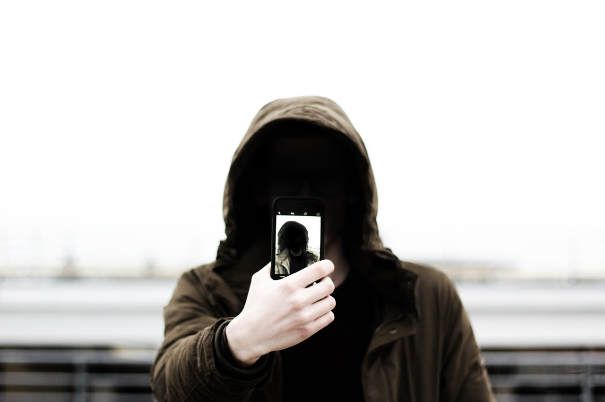
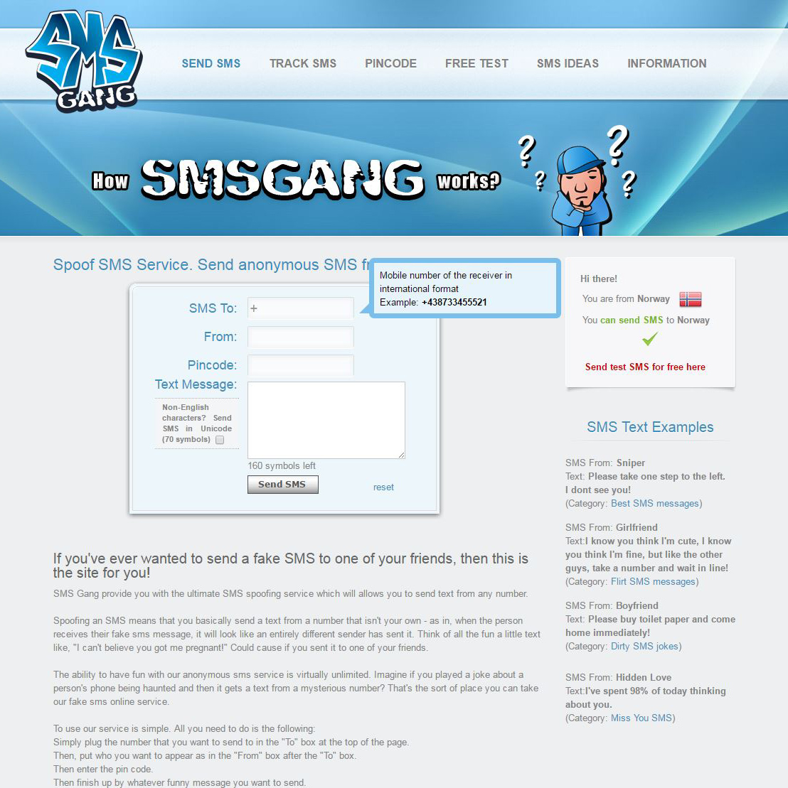

MOBILE UNITS
Mobile units like smart phones, tablets, and smart watches contains a large amount of personal information. If someone gains access to your device they might be able to listen in to your calls, read your email, and track you. Now that Internet of Things (IoT) is becoming bigger, so will the hacking of these devices or other devices that controls them. With access to a home equipped with IoT devices, the hacker would have full control.
APPLICATIONS
Most people would consider applications you download from Google Play, App Store, or Windows Store to be safe. In most cases this is true for things that can be eliminated by automatic scans, like malware, but applications made for scamming can be hard to detect. Even though scamming applications are removed as they are discovered, it might be too late as they could already have gained access to someone's personal information.
If calculator app needs access to your contact list, GPS, messages, camera, storage and network. It would be a good idea to find another app. However, the GPS could be used to find what country you are in, and set your currency to the one used in your country. The network could be used to keep currency value up to date. It could also be a very basic app, that collects information about you, then makes money selling that to companies that are interested. They could of course also use this data for other nefarious means.
You can however customize the permissions each app gets. There are antivirus apps for smartphones, but these can be risky, given that a significant amount of them are malicious. Rather than looking at how many downloads/ratings, checking for detailed reviews from tech sites is the safest way to make sure you get something solid. Depending on your use of the smartphone, it might not be necessary.
A good way to weed out a lot of the malicious or fake apps, are to read the comments and ratings (this can be faked or you can pay for a higher rating and positive comments). You should also look at what other applications the developer has made before. If you are still uncertain about the app, it's a good idea to look it up online.
When using third party marketplaces or applications from unknown sources you have to be extra careful since these will not have the security factor offered when downloading through the official marketplace. This is usually not a problem since the user has to turn on the option for applications from unknown sources.
APPLICATIONS
- Do not allow installation of applications from unknown sources.
- Only use a official marketplace.
- Read comments and ratings (not always to be trusted).
- Look for curated recommendations like “editors choice”.
- Check what other applications the developer has made before.
- Check what permissions different apps wants.
USB CONNECTION
Earlier, you could bypass the lock screen by connecting the phone to a computer. Today most operating systems has taken measures to prevent this. Should you however have an outdated version of your smartphone operating system, it could still be possible. If that's not patched on your phone, it's both a risk if someone steals your phone, and if you connect it places you do not know where the other end of the cable is plugged, like services that lets you charge your phone. It can be a good idea to bring a powerbank and charge your phone this way when on the go.
BLUETOOTH
Bluetooth is relatively safe in that it only has a range of ~10m which will limit communication with other devices. Bluetooth also has security measures built in, especially the later versions. It still happens that someone finds a way to breach bluetooth (older versions are more prone).
One way to abuse Bluetooth is through Bluejacking. Bluejacking a term used for the act of sending unwanted data by Bluetooth. Since Bluetooth allows for contact, calendar and media transfer it can be used for marketing or scams.
You can also abuse Bluetooth if you are paired to a unit. Through pairing the attacker can receive data from the victim's phone. To pair units, you will usually have to go through an authentication process. The most used are PIN-codes where you will get a random code on the device you want to connect, and then have to write it into the other device. Because there is so much information available through Bluetooth when paired with another unit, you should be careful what devices you leave accessible to other people. If you have paired your phone to your car stereo system for example, all your messages, call logs and contacts may be available.
PHYSICAL ACCESS
If someone with malicious intent gets physical access to your phone, all you have is your lock screen. This should be enough to protect your data from low-end thieves. However, if you have sensitive files from work or otherwise that could have high value to others, you should at least pick a strong password, rather than number-code or pattern. This is due to limitations in the last two making them possible to brute-force by an experienced attacker. It’s also important to enable encryption, if you have sensitive and/or confidential information on your phone.
If you buy a used phone, it could be infected. Provided you have the technical skills, you can fix it, but it is by no means easy. Should you want to sell an old phone, you risk the buyer being able to recover your files in many cases. Same as above, you can make it very hard to recover them, if you have the needed skills. We have something called “factory reset”. This make the phone seem like it’s starting from scratch, but it's not guaranteed that it deletes all your data in a way that is unrecoverable with the proper skills.
COMMUNICATION
We use phones to communicate with people. Without getting too technical, old fashion SMS messages can easily be spoofed (false sender number). Depending on how smart the attacker is, this can be very hard to detect. Using chat apps like WhatsApp or Signal can greatly improve how secure the conversation is. Recently Facebook Messenger also got end-to-end encryption option. However this is currently not available for group conversations.
There are websites that will let you send SMS to people, where you can choose who it appears to be sent from. This can be both a number, and text. Sadly this works VERY well. It’s hard to identify it being spoofed if it’s well written. Being skeptical to any message that seems a bit “off”, will help you to some extent. Also discarding any critical messages, especially if they want you to give them information or visit a website. If it’s from someone you know, call to check if they sent it.
No matter how secure your phone is, people can still trick you to make changes to it, unless you are very cautious. You can get a call from someone claiming to be your bank, saying they need some information from you. This can later be used for them to call your actual bank, and try to gain access to your account by tricking the customer service. The only way to be safe from this is to be very cautious. Do not give any confidential information over phone.

Follow us on social media!